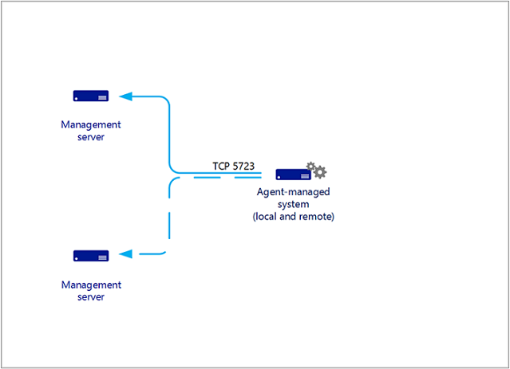
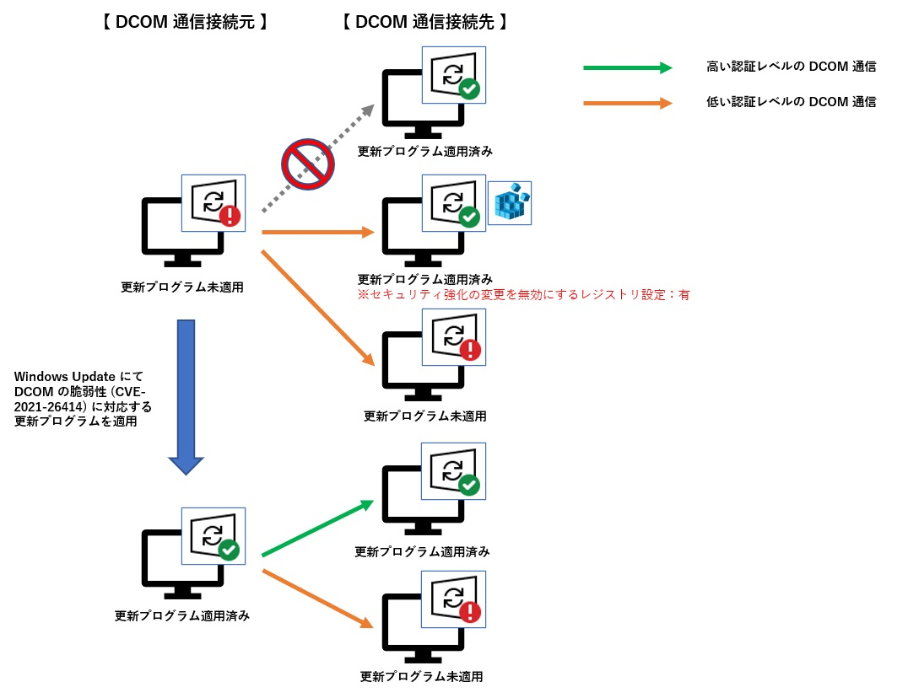
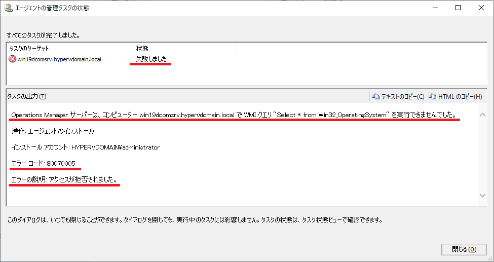

皆様こんにちは、System Center サポートチームの 石原 です。
System Center Operations Manager（以後 SCOM） では、Windows サーバーの管理における一部の処理で分散コンポーネントオブジェクトモデル/Distributed Component Object Model（DCOM） の通信を用います。
インフラ内に DCOM の脆弱性 (CVE-2021-26414) に対応する更新プログラムが未適用の Windows サーバーが混在する場合、SCOM での管理に影響するケースがございます。
本日は、DCOM の脆弱性 (CVE-2021-26414) に対応する更新プログラムの SCOM への影響についてご説明いたします。
SCOM 管理サーバーと管理対象の Windows サーバー間の DCOM 通信について
SCOM 管理サーバーと管理対象の Windows サーバー間の通信の大部分は、エージェントが収集したデータを SCOM 管理サーバーに送信するものです。
その際に用いる通信ポートは、エージェントから SCOM 管理サーバーに対して TCP 5723 が使用されます。
※ エージェントと管理サーバー間の通信

一方で、エージェントから SCOM 管理サーバーへの TCP 5723 以外の通信が発生するタイミングもございます。
例えば、SCOM コンソールからエージェントを管理する際 （ エージェントのプッシュ インストール、修復、削除）や エージェント サーバーへのハートビート通信などです。
SCOM の各コンポーネント間で使われる通信ポートについては、詳しくは Operations Manager 用のファイアウォールの構成 に記載しています。
SCOM では、この SCOM コンソールからエージェントを管理 （ エージェントのプッシュ インストール、修復、削除） に際して DCOM 通信 が用いられます。
エージェントをプッシュ インストールする事前準備として、対象の Windows サーバーの OS 情報などを WMI クエリにて取得したり、対象サーバーの管理共有のフォルダに一時的にエージェントのインストール ファイルを配置しますが、これらの処理に DCOM 通信を用います。
詳しくは Windows システムへのエージェントの展開 に記載しています。
DCOM の脆弱性 (CVE-2021-26414) に対応する更新プログラムの適用状況に応じた通信可否
以下の公開情報に記載の通り、 DCOM の脆弱性（CVE-2021-26414）への対応として、2021 年 6 月 8 日以降に公開された更新プログラムが適用されている環境では、本脆弱性に対応している高い認証レベルで DCOM 通信が行われるようになります。また、2022 年 6 月 14 日以降に公開された更新プログラムが適用されている接続先の環境に対しては、低い認証レベルで通信が行われた際には、通信が拒否され、エラーイベント （SYSTEM Event ID：10036, ソース：DistributedCOM） が記録される動作となります。
[公開情報]
[IT管理者向け] DCOM の脆弱性 (CVE-2021-26414) に対応するためのガイダンス
更新プログラムが適用されている接続先の環境に対して接続する対処策は 2つあります。
① 接続元に更新プログラムが適用して高い認証レベルで通信可能にする。
② 接続先サーバーにてセキュリティ強化の変更を無効にするレジストリ設定を行い、低い認証レベルで通信可能にする。
①について、ブログ掲載日時点 （ 2022年11月28日 ） で Windows Server 2019 向けに公開されている最新の更新プログラムは KB5019966 となります。
[公開情報]
2022 年 11 月 8 日 — KB5019966 (OS ビルド 17763.3650)
②について、以下のサイトにセキュリティ強化の変更を無効にするレジストリ設定について記載しています。
[公開情報]
KB5004442 - Windows DCOM Server セキュリティ機能バイパスの変更を管理する (CVE-2021-26414)
いずれの方法でも DCOM 通信が可能になりますが、② は DCOM の脆弱性対応が実施できていないことになりますので、基本的には ① の接続元サーバーへ更新プログラムを適用する方法を検討してください。
更新プログラムが適用したサーバーから更新プログラム未適用のサーバーに対しては低い認証レベルで通信します。
DCOM の脆弱性 (CVE-2021-26414) に対応する更新プログラムの適用状況に応じた通信可否を纏めると以下の図の通りです。

SCOM 環境における影響について
SCOM では、SCOM コンソールからエージェントを管理する際 （ エージェントのプッシュ インストール、修復、削除） に DCOM 通信を用います。
SCOM 管理サーバーに DCOM の脆弱性（CVE-2021-26414）への対応として 2021 年 6 月 8 日以降に公開された更新プログラムが適用されていない場合、更新プログラムを適用したサーバーへのエージェントのプッシュ インストールを試みると以下のエラーで失敗します。

インストール対象のサーバー側に以下のイベントログが出力されています。
更新プログラム未適用のサーバー ( 今回は SCOM 管理サーバー ) から更新プログラム適用済みのサーバーに対して低い認証レベルで DCOM 通信が試行された結果、通信が拒否されたことが分かります。
==================
ログの名前:System
ソース:Microsoft-Windows-DistributedCOM
日付:2022/11/11 19:53:07
イベント ID:10036
タスクのカテゴリ:なし
レベル:エラー
キーワード:クラシック
ユーザー:HYPERVDOMAIN\administrator
コンピューター:win19dcomsrv.hypervdomain.local
説明:
The server-side authentication level policy does not allow the user HYPERVDOMAIN\Administrator SID (S-1-5-21-462977349-3622049776-211427293-500) from address 172.16.1.41 to activate DCOM server. Please raise the activation authentication level at least to RPC_C_AUTHN_LEVEL_PKT_INTEGRITY in client application.
==================
接続先サーバーにてセキュリティ強化の変更を無効にするレジストリ設定を行うことでエージェントのプッシュ インストールが成功しますが、この方法の場合、そのサーバーは DCOM の脆弱性対応が実施できていないことになります。
また、更新プログラム適用済みの対象サーバーが多数存在する場合、それらすべてのサーバーのレジストリ設定を行う必要があり、運用負荷が大きくなります。
ですので、基本的には SCOM 管理サーバーに更新プログラムを適用することを推奨します。
SCOM 管理サーバーに更新プログラムを適用することで、更新プログラム適用済みのサーバーに対しては高い認証レベルで DCOM 通信を行い、更新プログラム未適用のサーバーに対しては低い認証レベルで DCOM 通信を行い、エージェントのプッシュ インストールが成功します。
今回の内容は、長期間 Windows Update による更新プログラムの適用をされていない SCOM 管理サーバーをご利用されている場合に直面しやすい問題です。
新規に Windows Server を導入される際は、最初に Windows Update を実施して更新プログラムを適用されるケースが多いと存じます。
そういった新規導入の Windows Server を SCOM の管理対象に加える際に、エージェントのプッシュ インストールが失敗して発覚するためです。
本事象に直面された場合は、Windows Update による更新プログラムの適用をご検討ください。
※本情報の内容（添付文書、リンク先などを含む）は、作成日時点でのものであり、予告なく変更される場合があります。